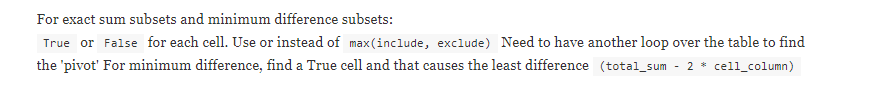

Subsets/subsquence
Geeks for Geeks archives: https://www.geeksforgeeks.org/tag/subset/
Optimization checks:
- Sorting the whole array
- Priority queues (check
Miscellaneous Problemssection)
For each element, there are 2 choices: Take or leave
Two ways to implement this:
- Recursion
- DP
Standard questions
https://www.geeksforgeeks.org/partition-problem-dp-18/
isSubsetSum(list, n, sum / 2) = isSubsetSum(list, n - 1, sum / 2) or isSubsetSum(list, n - 1, sum / 2 - list[n - 1])

DP
Problems like:
Base DP method is LIS.
Smart implementation: https://leetcode.com/problems/largest-divisible-subset/discuss/84006/Classic-DP-solution-similar-to-LIS-O(n2)
class Solution:
def largestDivisibleSubset(self, nums: List[int]) -> List[int]:
nums = sorted(nums)
set_len = [1] * len(nums)
pre = [-1] * len(nums)
max_len = 0
index = -1
for i, target in enumerate(nums):
for j in range(0, i):
if target % nums[j] == 0:
if (1 + set_len[j]) > set_len[i]:
pre[i] = j
set_len[i] = 1 + set_len[j]
if set_len[i] > max_len:
index = i
max_len = set_len[i]
result = []
while index != -1:
result.append(nums[index])
index = pre[index]
return result
https://leetcode.com/problems/longest-harmonious-subsequence/
It's a subsequence, meaning, you can drop elements you don't like.
The gotcha here is that the max length of subsequence is just freq(x) + freq(x+1) | x E array